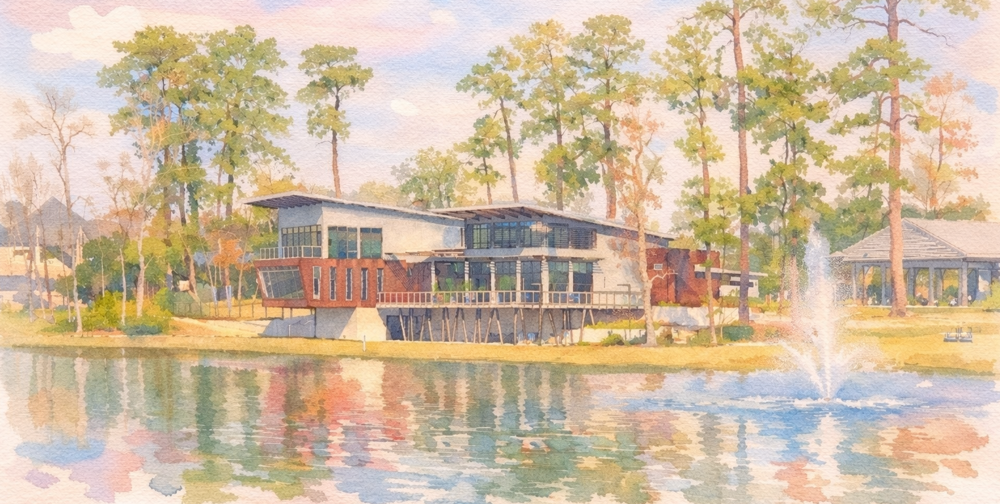

Date: Fecha: April 18, 202618 de abril de 2026
Ceremony Time: Hora de Ceremonia: 4:30 PM
Reception Time: Hora de Recepción: 5:30 PM – 10:00 PM
Location: Lugar:
The Lake House at Grand Central ParkLa Casa del Lago en Grand Central Park
1039 Lake House Dr, Conroe, TX 77304
View in Google MapsVer en Google Maps
To RSVP, please click the RSVP tab here on our website and type in your name. We ask that you kindly RSVP by March 7th so we can finalize catering and seating arrangements.
Para confirmar tu asistencia, por favor haz clic en la pestaña RSVP aquí en nuestro sitio web e ingresa tu nombre. Te pedimos amablemente confirmar a más tardar el 7 de marzo para poder finalizar el catering y la asignación de asientos.
If you do not RSVP by March 7th, you will be marked as “not attending”. We would love celebrating with you, however, we have to provide an exact guest count to our vendors and cannot accept late RSVPs.
Si no confirmas tu asistencia antes del 7 de marzo, se te marcará como “no asistirá”. Nos encantaría celebrar contigo, pero debemos proporcionar un número exacto de invitados a nuestros proveedores y no podremos aceptar confirmaciones tardías.
You will be missed! Life happens, no worries. Please, let us know as soon as possible that you will no longer be in attendance.
¡Te vamos a extrañar! Sabemos que la vida pasa, no te preocupes. Por favor avísanos lo antes posible que ya no podrás asistir.
Due to limited capacity, if your plus-one was not included on the invitation we ask that you reach out to us directly.
Debido a la capacidad limitada, si tu acompañante no fue incluido en la invitación, te pedimos que te comuniques directamente con nosotros.
Your presence is the greatest gift, truly. We’re so very grateful you’re celebrating with us! If you’d like to gift us something, we aren’t doing a traditional registry—instead, we’ve set up a honeymoon fund to help us fuel our first adventure as a married couple.
Tu presencia es el mejor regalo, de verdad. ¡Estamos muy agradecidos de que celebres con nosotros! Si deseas hacernos un regalo, no tendremos una mesa de regalos tradicional; en su lugar, hemos creado un fondo para nuestra luna de miel para impulsar nuestra primera aventura como matrimonio.
We would love to see our family and friends dress up with us! If you are able, we would love our guests to dress in semiformal attire. The ceremony will be held outside on a balcony. Please, take that into consideration when choosing what to wear. The average temperatures in April range from 60F to 78F.
¡Nos encantaría ver a nuestra familia y amigos arreglarse con nosotros! Si te es posible, nos gustaría que nuestros invitados vistieran atuendo semiformal. La ceremonia se llevará a cabo al aire libre, en un balcón. Por favor, tómalo en cuenta al elegir qué ponerte. Las temperaturas promedio en abril van de 60°F a 78°F.
If you’d like some guidance, we think this website has good recommendations: thesixpence.com/2025/02/05/semi-formal-wedding-attire/
Si te gustaría tener una guía, creemos que este sitio web tiene muy buenas recomendaciones: thesixpence.com/2025/02/05/semi-formal-wedding-attire/
George Bush Intercontinental Airport is about 34 minutes from the venue. William P. Hobby Airport is about 53 minutes from the venue.
El Aeropuerto Intercontinental George Bush está a aproximadamente 34 minutos del lugar. El Aeropuerto William P. Hobby está a aproximadamente 53 minutos del lugar.
Travel details and nearby options are listed in the Travel section of our website.
Los detalles de viaje y opciones cercanas de hospedaje están en la sección de Viajes de nuestro sitio web.
Both will be held at the same venue (The Lake House: 1039 Lake House Dr, Conroe, TX 77304). The ceremony will be held outdoors on the balcony, while the reception will be inside.
Ambas se llevarán a cabo en el mismo lugar (The Lake House: 1039 Lake House Dr, Conroe, TX 77304). La ceremonia será al aire libre en el balcón, mientras que la recepción será en el interior.
Please plan to arrive 15–20 minutes early so you have plenty of time to park, find your seats, and settle in before the ceremony begins.
Por favor planea llegar de 15 a 20 minutos antes para que tengas suficiente tiempo de estacionarte, encontrar tu lugar y acomodarte antes de que comience la ceremonia.
Our venue has on-site parking available.
Nuestro lugar cuenta con estacionamiento en el sitio.
Yes—parts of the day will be in both English and Spanish so everyone can feel included.
Sí; partes del día serán en inglés y en español para que todos se sientan incluidos.
We are having an unplugged ceremony, meaning that once the ceremony begins, we ask that all phones be put away and silenced. The greatest gift you can give us is being fully present when we say, “I do”. Our wonderful photographer will capture this special moment for us, and we promise to share our photos as soon as we receive them. That said, we’d love your photos at the reception! We will be sharing a QR code after the wedding to compile any photos you’d be happy to share.
Tendremos una ceremonia “unplugged”, lo que significa que una vez que inicie la ceremonia, les pedimos guardar y silenciar sus teléfonos. El mejor regalo que nos pueden dar es estar plenamente presentes cuando digamos “sí, acepto”. Nuestro fotógrafo capturará este momento tan especial, y prometemos compartir las fotos en cuanto las recibamos. Dicho esto, ¡nos encantarán sus fotos durante la recepción! Después de la boda compartiremos un código QR para reunir todas las fotos que deseen compartir.
Yes. We’ll have food and drinks during the reception. If you have any dietary allergies, please include them in your RSVP.
Sí. Habrá comida y bebidas durante la recepción. Si tienes alguna alergia alimentaria, por favor inclúyela en tu RSVP.
We won’t be serving alcohol, but we’re excited to share a fun menu of mocktails, sparkling drinks, and other non-alcoholic options to celebrate together.
No serviremos alcohol, pero nos emociona compartir un menú divertido de mocktails, bebidas con gas y otras opciones sin alcohol para celebrar juntos.
We’re not planning an official after-party. After the reception, we’ll be heading out to rest and soak it all in—but we’re so excited to celebrate together during the wedding.
No estamos planeando un after-party oficial. Después de la recepción nos iremos a descansar y a asimilar todo, pero estamos muy emocionados de celebrar juntos durante la boda.
If you have any additional questions that are not listed or answered on this page, please feel free to reach out directly to us.
Si tienes preguntas adicionales que no estén incluidas o respondidas en esta página, no dudes en contactarnos directamente.